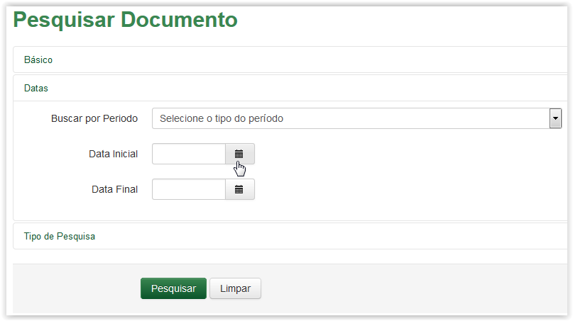

Pesquisar Documento
Após selecionar a opção Documento no menu do sistema SGDoc, o sistema apresenta a tela Pesquisar Documento. Selecione a seção desejada:
Ao selecionar a seção Básico, o sistema apresenta as seguintes opções de pesquisa:
Tela Pesquisar Documento - Seção Básico
Informações para preenchimento para Pesquisar Documento:
Seção Básico
Digital: |
Digital do documento. |
Tipo: |
Tipo do documento conforme cadastrado |
Número: |
Número do documento. |
Assunto: |
Assunto informado no cadastro do documento. |
Assunto Complementar: |
Assunto complementar informado no cadastro do documento. |
Assinatura: |
Assinatura informada no cadastro do documento. |
Origem: |
Origem informada no cadastro do documento. |
Interessado: |
Interessado informado no documento. |
Destino: |
Destino informado no documento. |
 Preenchendo a seção Básico da Pesquisa de Documento!!
Preenchendo a seção Básico da Pesquisa de Documento!!
Ao selecionar a seção Datas, o sistema apresenta as seguintes opções de pesquisa:
Tela Pesquisar Documento - Seção Datas
Informações para preenchimento para Pesquisar Documento:
Seção Datas
Buscar por Período: |
Período: data do cadastro, data da autuação ou data do prazo do processo. |
Data Inicial: |
Data inicial conforme o período informado. |
Data Final: |
Data final conforme o período informado. |
 Preenchendo a seção Datas da Pesquisa de Documento!!
Preenchendo a seção Datas da Pesquisa de Documento!!
 é apresentado um calendário para o preenchimento do campo (Veja Nota 1):
é apresentado um calendário para o preenchimento do campo (Veja Nota 1):
Clicando no ícone Calendário
Selecionando a data para preenchimento do campo Data Inicial
é apresentado um calendário para o preenchimento do campo (Veja Nota 1):Clicando no ícone Calendário
Selecionando a data para preenchimento do campo Data Final
Ao selecionar a seção Tipo de Pesquisa, o sistema apresenta as seguintes opções de pesquisa:
Tela Pesquisar Documento - Seção Tipo de Pesquisa
Informações para preenchimento para Pesquisar Documento:
Seção Tipo de Pesquisa
Tipo de Pesquisa: |
Pesquisa por fragmento ou palavra completa |
 Preenchendo a seção Tipo de Pesquisa da Pesquisa de Documento!!
Preenchendo a seção Tipo de Pesquisa da Pesquisa de Documento!!
Após preencher o(s) campo(s) da(s) seção(ões), clique no botão :
Tela Pesquisar Documento - Resultado da Pesquisa
 Formas de visualizar os documentos no Resultado de Pesquisa!
Formas de visualizar os documentos no Resultado de Pesquisa!


Para visualizar a imagem do documento, clique no ícone disponível na coluna Ações do Resultado da Pesquisa:
Tela Pesquisar Documento - Selecionando o ícone Imagem
Após clicar no ícone, o sistema apresentará a tela Imagem do Artefato, conforme explicado em Ações da Área de Trabalho. Acesse o link Visualizar Imagem.
Para detalhar o artefato, clique no ícone disponível na coluna Ações do Resultado da Pesquisa:
Tela Pesquisar Documento - Selecionando o ícone Detalhes
Após clicar no ícone, o sistema apresentará a tela Detalhar, conforme explicado em Ações da Área de Trabalho. Acesse o link Detalhar artefatos.
IMPORTANTE!!
 Nota 1:
Nota 1:
Nos campos de Data, ao clicar no ícone  o sistema apresenta um calendário:
o sistema apresenta um calendário:

Calendário
O calendário é exibido apresentando o mês e ano atuais  , além do dia corrente
, além do dia corrente  . Utilize as setinhas
. Utilize as setinhas  para navegar entre os meses (anteriores e posteriores) e clique no dia desejado
para navegar entre os meses (anteriores e posteriores) e clique no dia desejado  para que o campo de data seja preenchido:
para que o campo de data seja preenchido:

Preenchimento do campo de Data
 Nota 2:
Nota 2:
Os campos Assinatura, Origem, Interessado e Destino devem ser preenchidos com o nome completo, exatamente como está cadastrado no sistema, mesmo que o tipo de pesquisa seja por fragmento.
Created with the Personal Edition of HelpNDoc: Full-featured multi-format Help generator